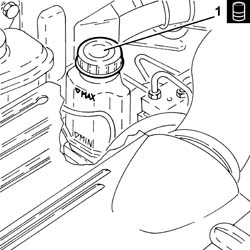
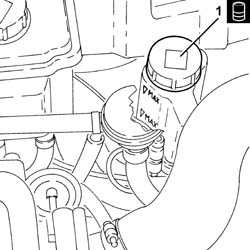
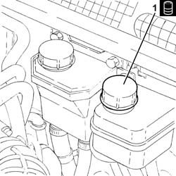

0010T64 brake and or clutch fluid check level and top up as necessary
- Path
- Procedures > 00 MAINTENANCE > 0010 NEW UNITS AND PLANNED MAINTENANCE'. > 0010T vehicle oil and fluids > 0010T64 brake and or clutch fluid check level and top up as necessary
- Kind
- repair procedure (removal / refitting; the operation number is the code)
- Applies to
- all engines; all production periods
- Interactive page
- https://sloeber94.github.io/elrnDB-a147/en/#/3024729
Applies to: engines: 1.6 TS, 2.0 TS; all production periods
Applies to: engines: 1.9 JTD 8V; all production periods
1. Unscrew the cap and check that the fluid in the reservoir is at the maximum level; if not, top up with the recommended fluid.
 | Type | Component | Name | Qty. |
|---|---|---|---|---|
1 | Fluid [l] | BRAKE-CLUTCH HYDRAULIC SYSTEMS | TUTELA CAR TOP 4 FOR ALFA ROMEO | 0.52 |

Applies to: engines: 1.9 JTD 16V; all production periods
Proceed with removal 7025A12 Engine front sound insulation COVER - R.R. .
Proceed with removal 7025A14 Bonnet LID - R.R. .
Proceed with removal 1016A10 sound-proofing cover - r + r .
1. Unscrew the cap and check that the fluid in the reservoir is at the maximum level; if not, top up with the recommended fluid.
| Type | Component | Name | Qty. |
|---|---|---|---|---|
1 | Fluid [l] | BRAKE-CLUTCH HYDRAULIC SYSTEMS | TUTELA CAR TOP 4 FOR ALFA ROMEO | 0.52 |

Applies to: engines: 1.9 JTD 16V; all production periods
Proceed with refitting 1016A10 sound-proofing cover - r + r .
Proceed with refitting 7025A14 Bonnet LID - R.R. .
Proceed with refitting 7025A12 Engine front sound insulation COVER - R.R. .
Applies to: engines: 3.2 V6; all production periods
1. Unscrew the cap and check that the fluid in the reservoir is at the maximum level; if not, top up with the recommended fluid.
| Type | Component | Name | Qty. |
|---|---|---|---|---|
1 | Fluid | BRAKE-CLUTCH HYDRAULIC SYSTEMS | TUTELA CAR TOP 4 FOR ALFA ROMEO | - |

Topics linked from this page (4)
- 1016A10 sound-proofing cover - r + r
- 3330A10 BRAKE FLUID - Check level and top up, if necessary.
- 7025A12 Engine front sound insulation COVER - R.R.
- 7025A14 Bonnet LID - R.R.
Topics that link to this page (25)
- F01 POOR BRAKING ACTION
- 0010K20 20,000km service coupon, emission control version
- 0010K40 40,000km service coupon, emission control versions
- 0010K60 60,000km service coupon - emission control versions
- 0010K80 80,000km service coupon - emission control versions
- 0010M01 100,000km service coupon, emission control versions
- 0010M20 120,000km service coupon, emission control versions
- 0010M40 140,000km service coupon - emission control versions
- 0010M60 160,000km service coupon - emission control versions
- 0010M80 180,000km service coupon - emission control versions
- 3310A14 FRONT DISC BRAKES - R.R.
- 3310A30 FRONT BRAKE CALIPER (one) - R.R.
- 3310A48 front brake disc - r r
- 3310A57 front brake calliper bracket - r r
- 3310A59 front brake disc guard - r r
- 3330C30 brake fluid reservoir - r + r and wash inside
- 3330D02 brake servo/brake pump assembly - r r
- 3330E10 FLEXIBLE PIPE (one), left or right, to front brake calipers - R.R .
- 3340A12 A'B.S. system. - electronic and hydraulic CONTROL UNIT R.R.
- 3340A13 abs central mount - r r
- 3340B55 central brake pipe to lh - r r
- 3340B56 RIGID PIPE from hydraulic CONTROL UNIT to RIGHT FRONT BRAKE - R.R.
- 3340B62 rear connection central pipe - r r
- 3340B67 rh brake connection pipe - r r
- 3350A30 asr to control unit - r r